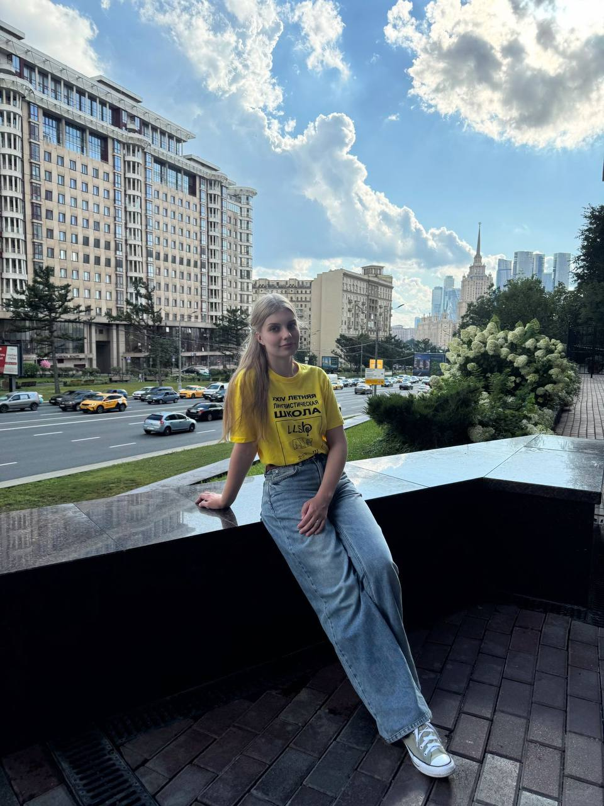
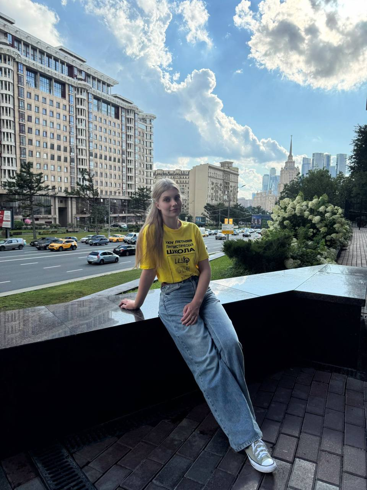

Парочка рандомных фактов про меня для ценителей: 12 лет прожила в Южно-Сахалинске сдала на водительские права со второго раза в июне 2024! с 7 класса играла в спортивное "Что? Где? Когда?" для школьников в составе сборной Сахалинской области чемпион Южно-Сахалинска по интеллектуальным играм-2024 обожаю бальные и исторические танцы и горные лыжи по паспорту я Алена, а не Алёна (это важно!) год ходила на профильную биологию и готовилась к ЕГЭ по ней, чтобы стать клиническим психологом... ...но случайно дважды взяла ВсОШ по русскому языку и оказалась на ФиКЛе :)
 
